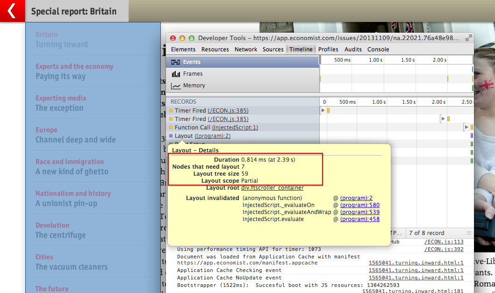
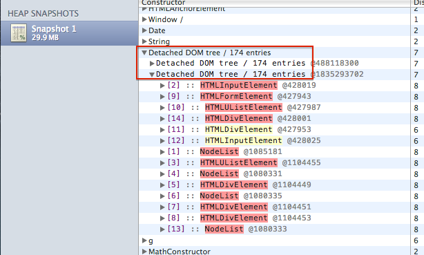

Making performance personal
Andrew Betts, FT Labs
@triblondon
,
@FTLabs


cdn.api.twitter.com
platform.twitter.com
api.facebook.com
platform.linkedin.com
apis.google.com
Time to interactive
Time to article visible
Time to swipe though entire edition
Time to table of contents visible
Time to article visible
Thanks for listening!
Contact me:
Email:
andrew@labs.ft.com
Twitter:
@triblondon
,
@ftlabs
Velocity 'office hours': 10:45-11:45am
For jobs with FT Labs, visit
labs.ft.com/jobs